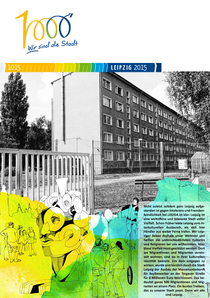
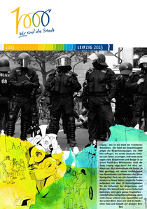
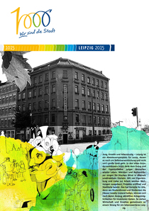
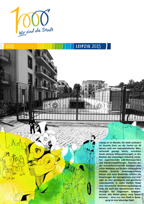

1000 Jahre Leipzig
Vorstellung der Plakatseriere
Der Verein für Stadtentwicklung möchte seinen Teil zur Feier des 1000 jährigen Jubiläums der Ersterwähnung Leipzigs beitragen. Wir haben uns Gedanken gemacht: Was macht Leipzig so einzigartig? Warum leben wir hier so gern? Mit der folgenden Plakatserie hoffen wir, diese Fragen zu beantworten und und aktiv daran mit zu gestalten, unsere Stadt in all seinen Facetten zu repäsentieren.
 Nicht zuletzt seitdem ganz Leipzig aufgestanden ist gegen Intoleranz und Fremdenfeindlichkeit bei LEGIDA ist klar: Leipzig ist eine weltoffene und tolerante Stadt voller Vielfalt. Schon früher lebte Leipzig vom interkulturellen Austauch, als sich hier hier Händler aus weiter Ferne trafen. Wir Leipziger lieben deshalb unser Weltnest und heißen die unterschiedlichsten Kulturen und Religionen bei uns willkommen. Aber diese Vielfalt muss geschützt werden. Dort wo Migrantinnen und Migranten vereinzelt wohnen, sind sie in ihrer kulturellen Identität bedroht. Um dem entgegen zu wirken, wurde erst kürzlich durch die Stadt Leipzig der Ausbau der Massenunterkunft für Asylbewerber an der Torgauer Straße für 6 Millionen Euro beschlossen. Das bedeutet ganze 500 Migrantinnen und Migranten an einem Platz. Ein buntes Treiben, das zu unserer Stadt passt. Denn wir alle sind Leipzig.
{kind=link}
 Leipzig - das ist die Stadt der friedlichen Revolution. Der Geist der Gewaltlosigkeit prägte die Bürgerbewegungen, die 1989 hier anfingen, die zweite deutsche Diktatur zum Fallen zu bringen. Und auch heute sagen hier viele Bürgerinnen und Bürger Ja zu einem friedlichen Miteinander. Auch die Stadt Leipzig trägt ihren Teil dazu bei. Allein seit 2011 kontrollierte die Polizei 14 Mal ganztägig mit einem Großaufgebot von Beamtinnen und Beamten das ganze Stadtgebiet. Dort, wo sich Gewalttäter besonders zu Hause fühlen, sorgte die Polizei außerdem mit über 10 Kontrollgebieten für die Sicherheit der Bürgerinnen und Bürger. Wo Störenfriede unsere Sicherheit bedrohen, wird ganz genau hingesehen - natürlich alles verdachtsunabhängig, denn nicht immer erkennt man Gewalttäter auf den ersten Blick.
{kind=link}
 Jung, Kreativ und lebenslustig – Leipzig ist ein Abenteuerspielplatz für Leute, denen es noch um Selbstverwirklichung und nicht um’s große Geld geht. In den alten Gründerzeithäusern blüht dank dem Zuzug und der Eigeninitiative junger Menschen wieder Leben. Wächter- und Ausbauhäuser sorgen für frischen Wind in ehemals unattraktiven Vierteln. Mit viel Eigenleistung und Liebe zur Arbeit werden Wohnungen ausgebaut, Projekte eröffnet und Stadtteile belebt. Das hat Vorteile für Alle, denn wo Studentinnen und Studenten die Häuser kreativ instand halten, können sich nach deren Auszug attraktive Anlagemöglichkeiten für Investoren bieten. So ziehen Wirtschaft und Kreative gemeinsam an einem Strang für ein lebenswerteres Leipzig.
{kind=link}
 Leipzig ist im Wandel, die Stadt verändert ihr Gesicht. Dort, wo die Viertel vor 20 Jahren noch von realsozialistischer Misswirtschaft geprägt waren, erstrahlen heute sanierte Altbauwohnungen. In den Brachen der ehemaligen Industrie entstehen experimentelle Loft-Wohnquartiere und Eigentumswohnungen. Pioniere aus der Immobilienwirtschaft beweisen jetzt schon Weitblick und fördern diese urbane Vitalität. Sanierte denkmalgeschützte Häuser und neue Stadtvillen erfüllen die Erwartungen der Leipzigerinnen und Leipziger an eine gesteigerte und gesicherte Lebensqualität. In vielen Vierteln findet eine dynamische Bevölkerungsbewegung statt, die auch den ökonomischen Anforderungen der Gegenwart entgegenkommt. Alte Mieter gehen, neue Mieter kommen - denn nur eine Stadt in Bewegung ist eine lebendige Stadt.
{kind=link}